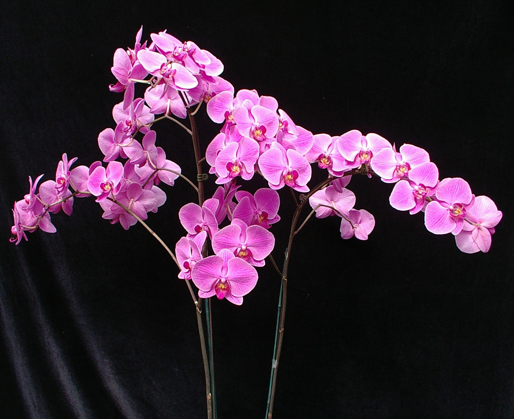

Organizaiton Contact Information
Rua Dr Pedro Zimmermann 5470
70410-900 Brasília
Sra. Jovita Rocha, public relations liason
No matter if you are a professional or amateur grower, an expert or a beginner, we will always have something to interest you. The Brazilian Orchid Organization shares the information we have gathered about the history, cultivation and care of many species of orchids. Above all, we try to satisfy your curiosity about these wonderful plants.Although this site emphasizes Brazilian species, it contains general information about orchids from around the world.
Take a look at some of these great orchid pictures to get you interested into the wonderful world of orchids.
Now that you've seen some pictures, why don't you go take a look at some of our other great web pages.